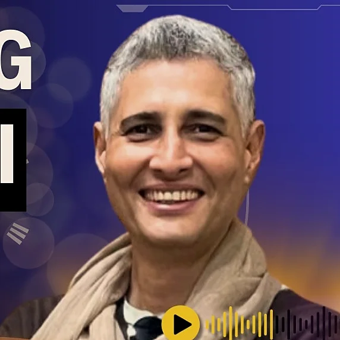

The Paragliding Atlas podcast
Paragliding Podcast Episode Library
84h 39m · 86 conversations
84h 39mof pilots talking86 conversations2023 to 2026

Episode 9Navigators7 January 2024voice 1 of 1212 voices1 / 12
So if you get below 1800 meters, start looking for a safe landing. Don't get close to the terrain unless you really know what you're doing
Vistasp Kharas Navigating Panchgani (Pre PWC India) : Vistasp Kharas · 54 min
85 columns, one a conversation, by date and as tall as it is long. Hover or tap one, or use the arrow keys.Tap one.
Swipe the picture for the next voice, or drag along the ridge.
Find a conversation ↓Find a conversation
Five Shelves
By guest
Who Is Talking
By topicBelow the ridge
All 86 Conversations
808 September 2026How to Thermal Like a ProBrett Janaway80 · 73 min · Fly betterFly better73 min6 September 2026SRS Piedrahita BGD Edition Task 2 HighlightsWorld CupsCompetitionCompetition791 September 2026Luc Armant talks about The Moment Coefficient, Enzo 3 Certification…Luc Armant79 · 21 min · Fly betterFly better21 min27 August 2026SRS Piedrahita BGD Edition Task 1 HighlightsWorld CupsCompetitionCompetition7825 August 2026Technical Masterclass by Brett Janaway | Science of Paraglider…Brett Janaway78 · 89 min · Fly betterFly better89 min23 August 2026SRS BGD Edition 2026 | Day 1World CupsCompetitionCompetition7719 August 2026113 mins of Unhinged conversations with The Man Behind Ozone ParaglidersRobert (Robbie) Whittall77 · 113 min · CompetitionCompetition113 min769 August 2026MetacognitionBeni Kalin & Heli Schrempf76 · 109 min · Risk and safetyRisk and safety109 min7529 June 2026The Russell Ogden InterviewRussell Ogden75 · 132 min · Risk and safetyRisk and safety132 min20 May 2026Task 5 Highlights | 15th Paragliding World Cup Super Final Pegalajar…World CupsCompetitionCompetition18 May 2026Task 4 Highlights | 15th Paragliding World Cup Super Final Pegalajar…World CupsCompetitionCompetition16 May 2026Task 2 Highlights | 15th Paragliding World Cup Super Final Pegalajar…World CupsCompetitionCompetition14 May 2026Task 1 Highlights | 15th Paragliding World Cup Super Final Pegalajar…World CupsCompetitionCompetition13 May 2026Highlights Day 1 - PWCA Superfinal 2026World CupsCompetitionCompetition7427 April 2026Paragliding Physiology & Safety Protocols | Dr Matt Wilkes ExplainsDr Matt Wilkes74 · 83 min · Risk and safetyRisk and safety83 min7318 April 2026If you fly in the Himalayas, Alps, or above 3000 mtrs, this episode is…Dr Matt Wilkes73 · 9 min · Risk and safetyRisk and safety9 min7210 April 2026Cognitive Bias of Dunning Kruger Effect in Paragliding | Explained by…Beni Kalin & Heli Schrempf72 · 9 min · Risk and safetyRisk and safety9 min7127 March 2026Sports Psychology for ParaglidingYvonne Dathe71 · 68 min · Fly betterFly better68 min7020 March 2026From Cuba to SocotraChris Garcia70 · 50 min · Lives in the airLives in the air50 min6915 March 2026How to Fly With Your Dog | Explained by ShamsShams & Ouka69 · 49 min · Lives in the airLives in the air49 min685 March 2026Survived 15 Years of Flying Then a Rescue Helicopter Changed Everything…Nick Neynes68 · 73 min · Risk and safetyRisk and safety73 min6729 January 2026From Tents to TrophiesLuke De Weert67 · 77 min · CompetitionCompetition77 min667 January 2026Tom Lolies Explains The Science Of Wing Design and Evolution from ENC…Tom Lolies66 · 92 min · Fly betterFly better92 min6526 December 2025The Art of Capturing Human Flight | Jake Holland's Guide to Filming…Jake Holland65 · 65 min · Fly betterFly better65 min6416 December 2025Scoring in Paragliding CompetitionsJoerg Ewald64 · 74 min · CompetitionCompetition74 min6311 December 202563Know Your EquipmentSnippetUrs Haari63 · 5 min · Fly betterFly better5 min624 December 2025Watch this Before you Buy a Paragliding Harness | A Talk with Zsolt EroZsolt Ero62 · 67 min · Fly betterFly better67 min6120 November 2025The Inside Story of Sports Racing Series (SRS) by Brett JanawayBrett Janaway61 · 75 min · CompetitionCompetition75 min6011 November 2025The Unfiltered Truth About Paragliding GovernanceBill Hughes & Goran Dimiskovski60 · 86 min · Risk and safetyRisk and safety86 min5929 October 2025The Uncomfortable Truth No One is Talking about in the Current Safety…Bill Belcourt59 · 76 min · Risk and safetyRisk and safety76 min5823 October 2025Bruce Goldsmith explains MRT scoring system and its impact on…Bruce Goldsmith58 · 28 min · CompetitionCompetition28 min5719 October 2025Luc Armant talks about Debunking the Myths and Upgrading Enzo 3Luc Armant57 · 40 min · Fly betterFly better40 min5610 October 2025Insights From The Gaggle with Tilen Ceglar & Stan RadzikowskiTilen Ceglar & Stan Radzikowski56 · 90 min · Risk and safetyRisk and safety90 min554 October 2025Pal Takats on Challenges, Change & The Future of Paragliding Pal Takats55 · 68 min · The industryThe industry68 min5426 September 2025What is #CIVLRESIGN with Julien GarciaJulien Garcia54 · 29 min · Risk and safetyRisk and safety29 min5330 August 202553Living the DreamAnatomy of a Dream with Damien LacazeDamien Lacaze53 · 63 min · Lives in the airLives in the air63 min5223 August 202552New TechnologiesDemystifying The Science Behind Endless Fun Factor of Parakites With…Bryan Van Ostheim52 · 57 min · The industryThe industry57 min517 August 202551Brand StoriesLegacy and Lifetimes of Gin Seok SongGin Seok Song51 · 57 min · The industryThe industry57 min5031 July 202550Sky GodsThe Journey WithinMaxime Pinot50 · 103 min · CompetitionCompetition103 min4917 July 2025Understanding SkymateRoman Barthelemy49 · 72 min · The industryThe industry72 min4814 July 202548Resources, Tools and TipsScience Backed Pre Flight Rituals to Unlock Laser Sharp Paragliding…Aninder Singh48 · 16 min · Fly betterFly better16 min4710 July 2025The Resilience EquationErlend Ukvitne47 · 40 min · CompetitionCompetition40 min467 July 202546Resources, Tools and TipsMastering the UnknownAninder Singh46 · 20 min · Fly betterFly better20 min4527 June 2025Consequence Over ProbabilityWill Gadd45 · 63 min · Risk and safetyRisk and safety63 min4421 June 2025Why Paragliding’s Safety Future Looks DifferentMichael Nesler44 · 78 min · The industryThe industry78 min4312 June 2025The Silent Mind In Screaming WindsGrant Smith43 · 102 min · Fly betterFly better102 min421 May 2025Meteorology 101Ivelin Kalushkov42 · 71 min · Fly betterFly better71 min4124 April 2025The Real Truth About Reserve ParachutesUrs Haari41 · 166 min · Fly betterFly better166 min4017 April 2025Shane Tighe’s Road to X-AlpsShane Tighe40 · 53 min · CompetitionCompetition53 min3911 April 2025777Aljaž Valič39 · 94 min · Fly betterFly better94 min386 April 2025Vol Biv & Freedom UnfilteredSandrine Roy38 · 43 min · Lives in the airLives in the air43 min3710 March 2025The Science of EN CertificationsAlain Zoller37 · 96 min · Fly betterFly better96 min3624 February 2025Finest Paragliding Reviews & Superpower of Changing Wings as A HumanZiad Bassil36 · 51 min · Fly betterFly better51 min3530 January 2025StorytimeEddie Colfox35 · 64 min · Lives in the airLives in the air64 min3424 January 2025Identifying Passion Vs ObsessionAshutosh Chopra34 · 64 min · Fly betterFly better64 min3317 January 2025Building a Healthy Relationship with the SkiesKinga Masztalerz33 · 101 min · Risk and safetyRisk and safety101 min3210 January 2025Modernizing SIV CoursesHelmut Schrempf32 · 80 min · Fly betterFly better80 min3029 December 2024Storytellers : Marko Milutinovic (Mid-Air Collision)Marko Milutinovic30 · 56 min · Lives in the airLives in the air56 min2814 December 2024Flying & Filming 3 : Andreas Lattner (hochzwei.media)Andreas Lattner28 · 76 min · Fly betterFly better76 min277 December 2024Flying & Filming 2 : Benjamin KelletBenjamin Kellet27 · 63 min · Fly betterFly better63 min2622 November 2024Risk Vs Reward 5 : Gabriel Orsini (partytillimpact)Gabriel Orsini26 · 101 min · Risk and safetyRisk and safety101 min2515 November 2024Helmet Safety : Christian Ciech : ICARO 2000Christian Ciech25 · 47 min · Fly betterFly better47 min247 November 2024Risk Vs Reward 4 : Raúl RodríguezRaúl Rodríguez24 · 57 min · Risk and safetyRisk and safety57 min2313 October 2024Brand Stories : Neo : Eric RousselEric Roussel23 · 63 min · The industryThe industry63 min226 October 2024Carabiner Fatigue : Finsterwalder & Charly (whitepaper)Finsterwalder & Charly22 · 17 min · Fly betterFly better17 min211 October 2024Flying & Filming 1 : Benjamin JordanBenjamin Jordan21 · 49 min · Fly betterFly better49 min2025 September 2024Living The Dream : Benjamin JordanBenjamin Jordan20 · 49 min · Lives in the airLives in the air49 min1914 September 2024Risk Vs Reward 3 : Manfred RuhmerManfred Ruhmer19 · 59 min · Risk and safetyRisk and safety59 min186 September 2024Risk Vs Reward 2 : Subir SidhuSubir Sidhu18 · 56 min · Risk and safetyRisk and safety56 min1729 August 2024Risk Vs Reward 1 : Philipp ZellnerPhilipp Zellner17 · 65 min · Risk and safetyRisk and safety65 min1622 August 2024New Technologies 4 : Veselin Ovcharov (Fly The Earth)Veselin Ovcharov16 · 59 min · The industryThe industry59 min1515 August 202415New TechnologiesNew Technologies 3 : Stephan Stiegler (AirDesign Paragliders)Stephan Stiegler15 · 82 min · The industryThe industry82 min1430 May 2024New Technologies 2Guillem Batlle & Adrià Grau14 · 82 min · The industryThe industry82 min1310 March 2024New Technologies 1 : Beni Kälin (speedflyingschool.com)Beni Kälin13 · 86 min · The industryThe industry86 min126 March 2024PWC Lifestyle: Klaudia BulgakowKlaudia Bulgakow12 · 72 min · CompetitionCompetition72 min1125 February 2024PWCA: Goran DimiskovskiGoran Dimiskovski11 · 97 min · CompetitionCompetition97 min1012 February 2024Pre PWC Kenya: Nikolay YotovNikolay Yotov10 · 52 min · Lives in the airLives in the air52 min97 January 2024Navigating Panchgani (Pre PWC India) : Vistasp KharasVistasp Kharas9 · 54 min · Lives in the airLives in the air54 min83 January 2024AMA #1Aninder Singh8 · 15 min · Fly betterFly better15 min724 December 2023Navigating Australia : Godfrey WennessGodfrey Wenness7 · 82 min · Lives in the airLives in the air82 min617 December 2023Sky Gods : Flying to Win : Honorin HamardHonorin Hamard6 · 108 min · CompetitionCompetition108 min510 December 2023Sky Gods : Flying 8000ers : Antoine GirardAntoine Girard5 · 67 min · CompetitionCompetition67 min42 December 2023Navigating India: Jigish Gohil (Bonus Ep)Jigish Gohil4 · 36 min · Lives in the airLives in the air36 min326 November 2023Navigating India: Eddie ColfoxEddie Colfox3 · 52 min · Lives in the airLives in the air52 min220 November 2023Navigating Colombia: Pal TakatsPal Takats2 · 73 min · Lives in the airLives in the air73 mindate to supplyCan we Steer a Round Reserve Parachute? Urs Haari Answers!Urs HaariFly betterFly better
Nothing matches. Clear the filter to see all 86.
Also on the channel
Films and short pieces
4 of 7 · a different four each visit
A Note of ThanksAninder Singh · 5 January 2025 · 8 minNew Technologies 5Frantisek Pavlousek (UP Paragliders)Frantisek Pavlousek · 22 December 2024 · 82 minTouch The Sky With GloryAninder Singh · 15 November 2023 · 2 minArt Of Flight in Norwegian SkiesFilmBird’s-Eye View of OsloStunning Nordic CityscapeFilmBird’s-Eye View of OsloPart 2Stunning Nordic CityscapeFilmJust another day in ParadiseFilm
Flying films and shorter pieces from the podcast's channel, outside the numbered episodes.